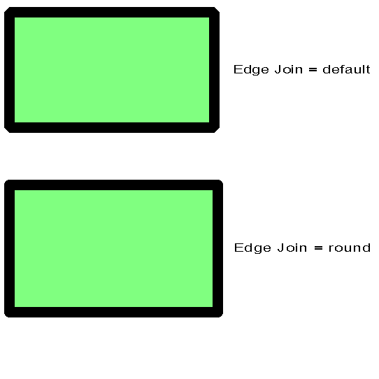

| Source image | Reference image |
|---|---|
 |
This test uses the ACI file to define the viewer default values of the Edge Join attribute. As in the reference image, the first line of the CGM is rendered per ACI-specified defaults of bevel for Edge Join. The second line of the CGM is rendered after explicit setting of attributes in the CGM body, Edge Join to round.